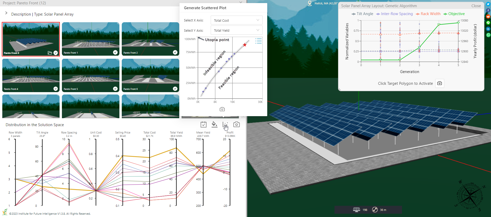

Visualizing the Pareto Front Using the Scalarization Method
By Charles Xie ✉
The Pareto front is a set of solutions that represent the optimal trade-off among multiple objectives. Solution X is said to dominate solution Y if X is better than Y in at least one objective, and same as or better in the other objectives. A solution not dominated by any other solutions in the feasible region in the solution space is said to be on the Pareto front.
In this article, I will use the solar panel array design problem as an exampel to show how to construct a Pareto front. There are two typical objectives in designing a solar farm — minimizing the cost and maximizing the yield. To increase the yield, we may need to increase the number of solar panels, which drives up the cost. To address this dilemma, we need to consider trade-off between these two contradictory objectives. The question is: Where do we draw the line then? This is exactly what the Pareto front stands for.
The scalarization method
Scalarization is probably the simplest method for solving a multi-objective optimization problem. It reformulates the multi-objective optimization problem into a single-objective optimization problem such that the optimal solutions to the latter correspond to the Pareto optimal solutions to the former.
In the case of the solar panel array design problem mentioned above, a natural choice for scalarizing the bi-objective optimization problem of cost and yield is to use the profit function: P = Y × s - C, where P is the profit, Y is the total yield, s is the selling price per kWh, and C is the total cost. In this way, we convert the problem into a single-objective optimization problem in which profit is the only objective. We can then use either a genetic algorithm or a particle swarm optimization algorithm to search for an optimal solution to this problem. But to construct a Pareto front for the original bi-objective problem, we have to vary the selling price s gradually and search for an optimal solution under each value. The results are shown in the following image.

The Pareto front generated using the scalarization method
The scatter plot in the above image shows the Pareto front. Above the Pareto front is the infeasible region — with a given cost (represented by the horizontal axis), it is impossible to have a solution that generates a higher yield (represented by the vertical axis) above this curve. Below the Pareto front is the feasibile region — irrespective of the cost, it is always possible to have a bad design that generates less electricity than the optimal design.
Conclusion
This article introduces the basic steps needed to determine the Pareto front using a scalarization method.